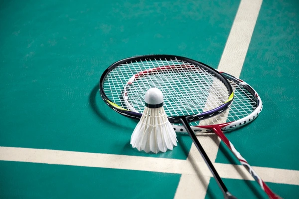

Saya tertarik bermain game di waktu luang karena setiap kali saya bermain game,
saya merasa senang dan bisa melepaskan penat setelah seharian belajar di sekolah...
Lihat selengkapnya
Dari bermain game, saya juga bisa mempelajari banyak teknik dan strategi yang harus
dilakukan supaya kita bisa menang, seperti bekerja sama dengan tim, mengambil
keputusan dengan cepat, dan tidak mudah menyerah ketika kalah. Selain itu, bermain
game membuat saya memiliki lebih banyak teman, karena saya bisa mengobrol dan
bermain bersama mereka secara online. Meskipun begitu, saya tetap berusaha membagi
waktu supaya game tidak mengganggu belajar dan kegiatan saya yang lain.

Hobby
Badminton
Saya memiliki hobi badminton karena saya bisa melakukan kegiatan fisik untuk
membuat tubuh saya lebih sehat dan supaya tidak bermain game terus-menerus...
Lihat selengkapnya
Badminton melatih kelincahan, kecepatan, dan daya tahan tubuh, sehingga saya tidak
mudah lelah saat beraktivitas. Saya biasanya bermain bersama teman-teman di sore
hari atau saat akhir pekan, sehingga hobi ini juga menjadi sarana untuk mempererat
pertemanan. Setiap pertandingan, baik menang maupun kalah, selalu memberi
pengalaman baru dan membuat saya semakin semangat untuk berlatih dan berkembang.
Hobby
Mendengarkan Musik
Saya suka mendengarkan musik di waktu luang karena musik bisa
membuat suasana hati saya lebih baik...
Lihat selengkapnya
Saat sedang lelah atau banyak tugas, mendengarkan lagu favorit membantu
saya lebih tenang dan fokus. Saya juga senang mencari lagu-lagu baru dari
berbagai genre supaya wawasan musik saya bertambah.